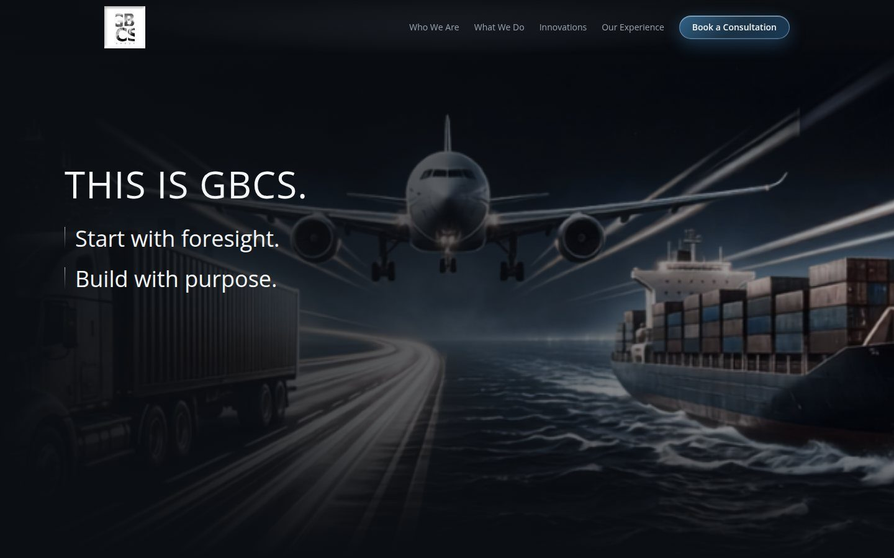
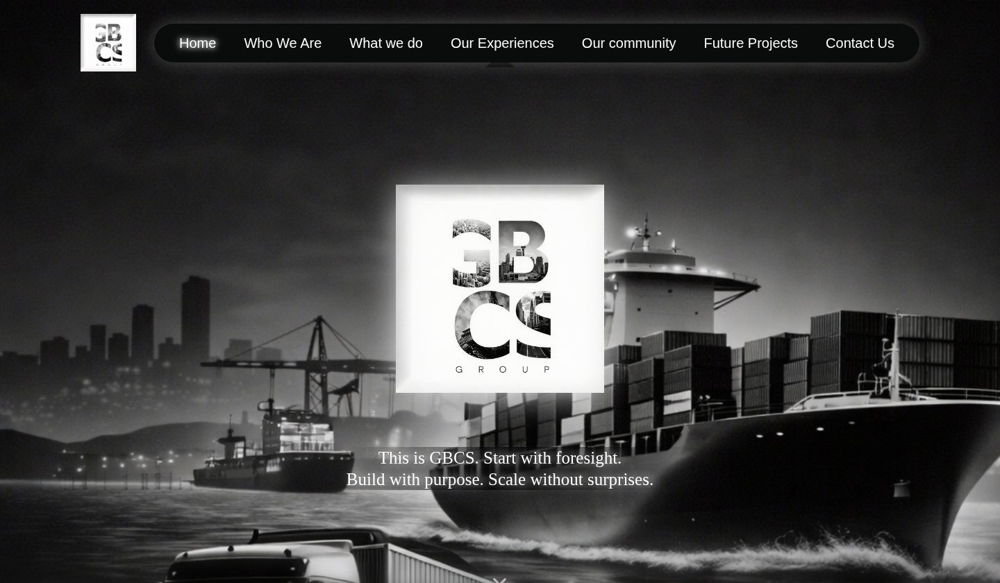

Projects
Three products, each starting from the same question — what is actually getting in someone’s way?
-
GBCS Group Website


Designed and built a fleet advisory firm’s website twice, WordPress first and then in code, with motion that keeps a premium brand calm.
Visit gbcsgroup.com -
TossLess
Helping households use food before it goes to waste
-
Steam App Redesign
Cutting decision fatigue out of buying games
-
Aquila Health Network
Built a Power BI analytics platform and predictive no-show model for a 40-clinic healthcare network, targeting a 15% reduction in missed appointments and 5% revenue growth.
-
Apple Health — Cycle Tracking
Under user research…
Photography
Design is where I solve. Photography is where I notice.
An ongoing, undirected record — light on a wall, someone's hands, the ten seconds before a place empties out.
About me
I’m Karen, a product designer who leads a design team, still hands-on with the craft: flows, systems, the pixel-level decisions that make something feel considered instead of assembled.
My process starts with research, not screens. I run interviews, sit with the uncomfortable finding, and let it reshape the brief rather than decorate it. But the work lives or dies in the details after that, how a label reads, how a flow holds together under edge cases, where a system bends and where it shouldn’t. A screen that says “expired” makes someone feel judged; one that says “use up soon” gets them to actually cook dinner. That gap is design, not copywriting, the words are just where you can see it happen.
I lead a team day to day, but I stay close to the craft because the thinking doesn’t scale if I stop doing it myself.
Off the clock I photograph, and collect hearts I find by accident. Same instinct as the work. Pay attention, be kind about what you find.
What I do
- Product & UX design
- Product management
- User research & usability testing
- Design systems
- Prototyping
Tools
- Figma
- Framer / Prototyping
- Adobe CC
- Notion, Jira
- Light front-end